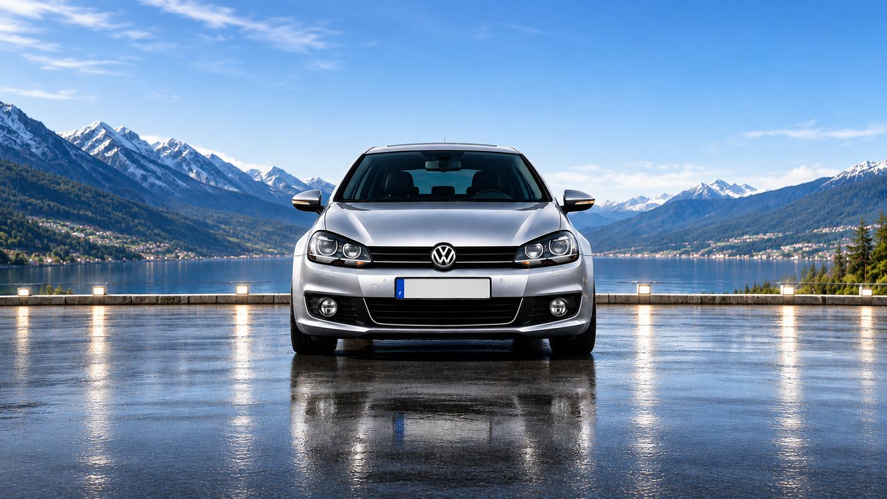
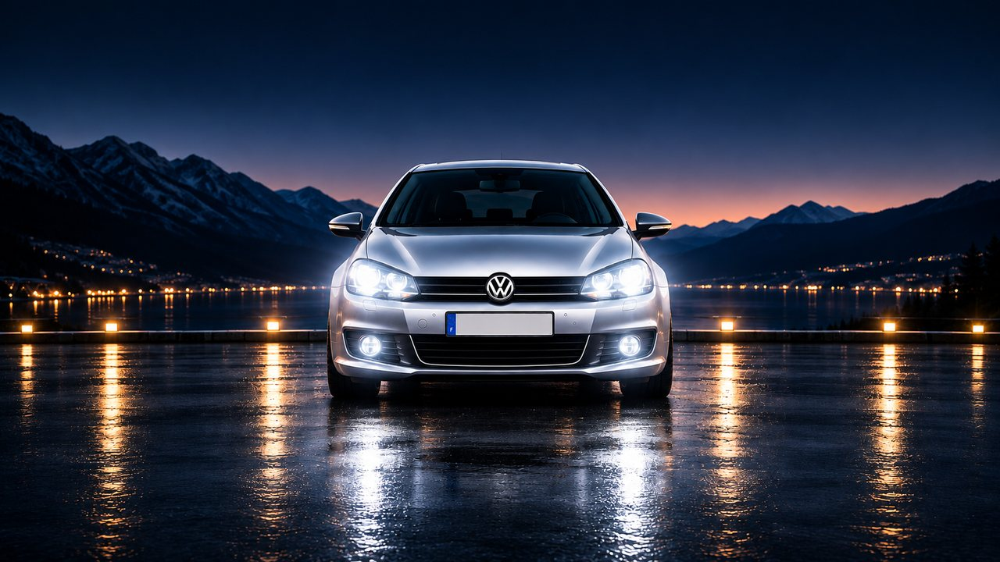
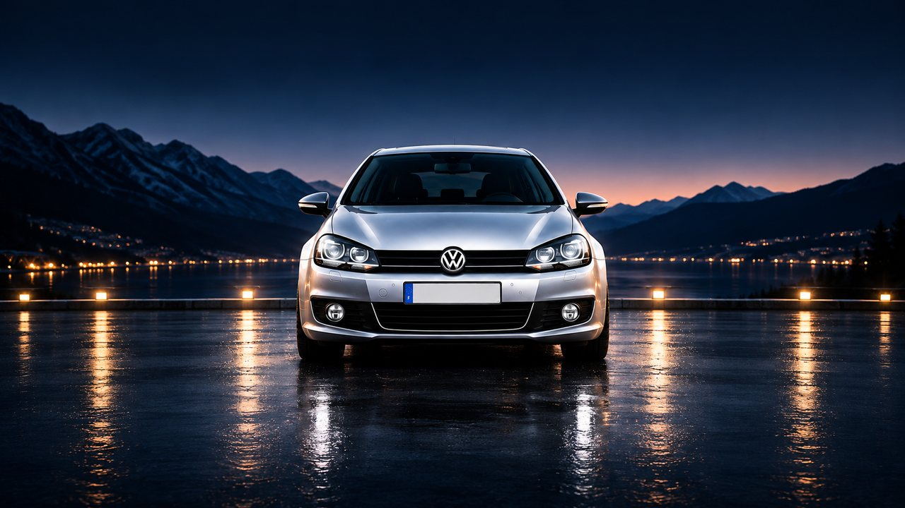
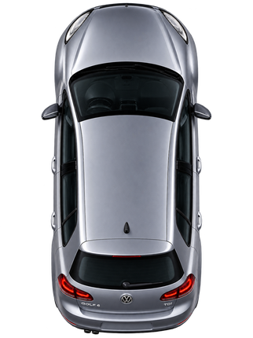

Verglas possible
CarburantIndisponible
BatterieIndisponible
ExtérieurmétéoIndisponible
--°
Météo…
Ressenti --°
Vent -- km/h
Humidité --%
-- / --
--km/h
--
Trajet
0.0km
0:00Durée
--Moy. km/h
Aucune lecture
CarburantIndisponible
BatterieIndisponible
ExtérieurmétéoIndisponible
MoteurIndisponible
Ouvrants et radars

ConducteurIndisponible
PassagerIndisponible
ArrièreIndisponible
CoffreIndisponible
CapotIndisponible
RadarsIndisponible
Information seulement. Rien n'est affiché tant que le poste ne le transmet pas.
--:--
--:--
Golf 6TDI 105
--°C
Bienvenue
Entretien
Rechercher une ville
Choisir un raccourci
GOLF 6
TDI 105